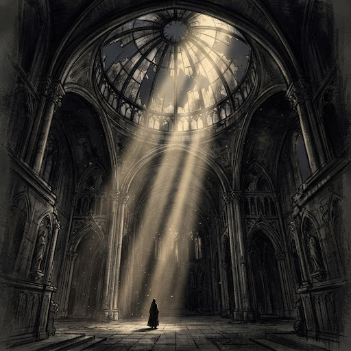
01
[연재중 / ONGOING (금)]
빛의 정원
한서윤 (Han Seo-Youn)
24 EPISODES
VIEW →
칸과 칸 사이, 보이지 않는 침묵 속에서 펼쳐지는 영적 서사와 회화적 시선. 10인의 작가가 선보이는 주간 연재 그래픽 노블.
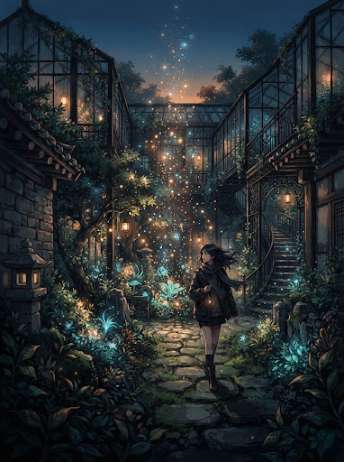
버려진 온실과 빛이 머무는 성소에서 벌어지는 기억의 복원기. 캔버스의 유채 질감과 디지털 스크롤 연출이 교차하며 침묵 속 구원의 순간을 포착한다. 작가는 상실된 신앙과 내면의 공허를 마주하는 주인공의 여정을 정교한 모노크롬 톤과 따스한 광휘의 대비를 통해 표현한다.
"이 작품은 단순한 만화가 아닌, 스크롤되는 벽화에 가깝다. 각각의 컷은 단절되지 않고 침묵을 호흡하며, 관객으로 하여금 영적 공간 안으로 걸어 들어가게 한다." — 큐레이터 권성민

01한서윤 (Han Seo-Youn)
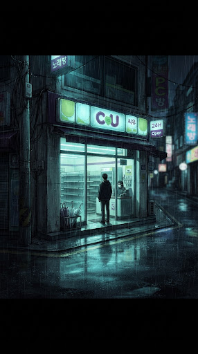
02이산하 (Lee San-Ha)
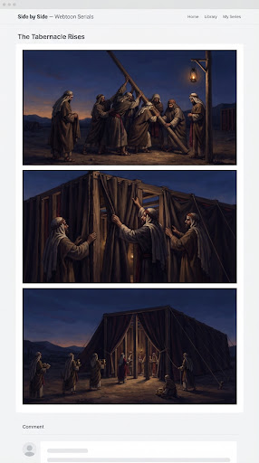
03강민석 (Kang Min-Seok)
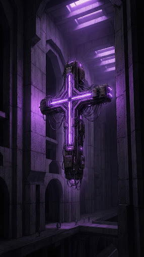
04문채원 (Moon Chae-Won)
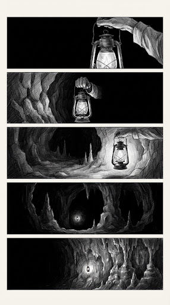
05정인호 (Jung In-Ho)
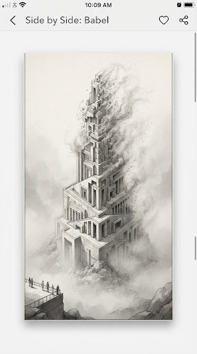
06조서연 / 임준호
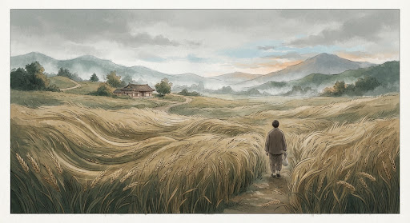
07백다솜 (Baek Da-Som)
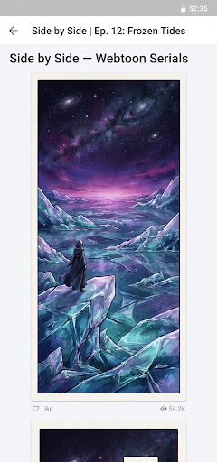
08최하은 (Choi Ha-Eun)
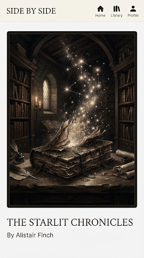
09송건우 (Song Gun-Woo)
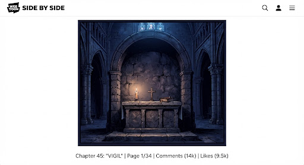
10윤지후 (Yoon Ji-Hoo)
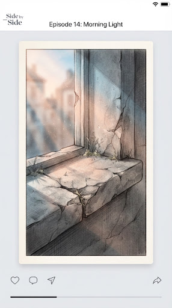
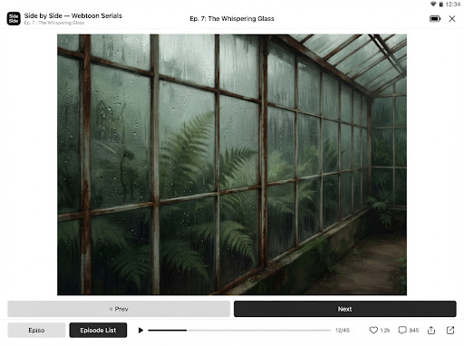
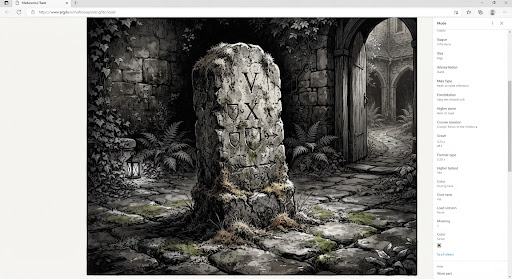
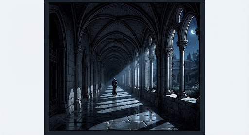
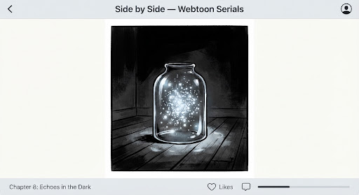
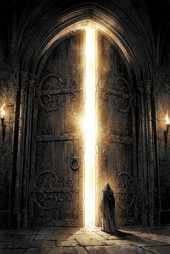